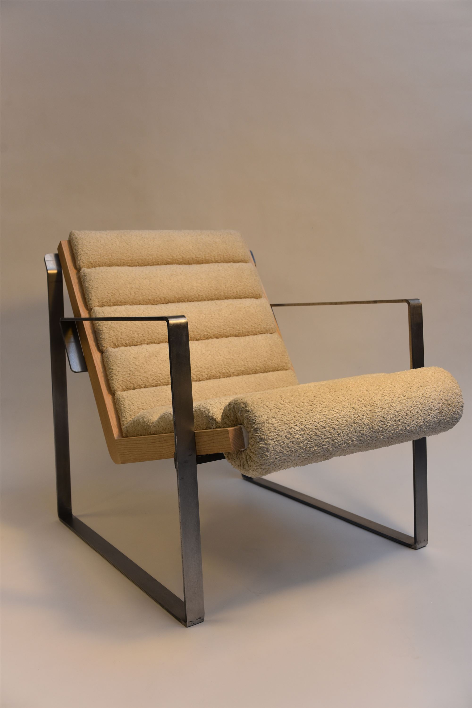

RØNLounge chair · steel & bouclé HOLDMechanical door stop
Bild: EIRA
EIRALeather · repairability
HOLDMechanical door stop
Bild: EIRA
EIRALeather · repairability
Product developer and furniture designer. I work in CAD, prototypes and materials that do real work instead of decoration. This autumn I also teach SolidWorks at Jönköping University.

RØNLounge chair · steel & bouclé
HOLDMechanical door stop
Bild: EIRA
EIRALeather · repairability
As a kid I took apart broken vacuum cleaners to see how they worked. Some of them even survived. That curiosity never left, it just got tolerances.
Before design I spent five years running my own practice, listening to people for a living. Turns out listening and building need each other. My thesis Kiaro tested if liquid wood can feel premium: six kitchenware pieces in Arboblend, developed with Yellon AB. The Öhrskog Foundation thought so too and gave it a scholarship.